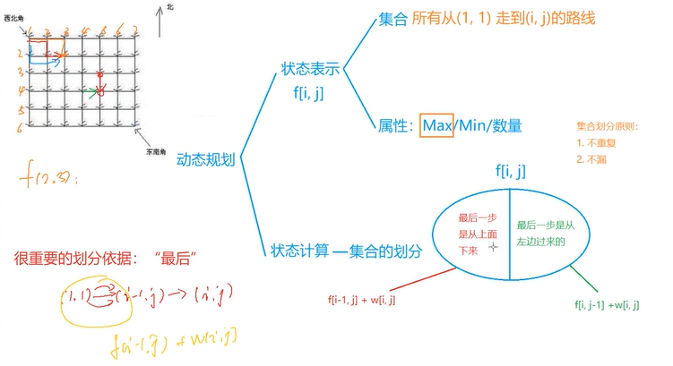

线性dp，背包问题，区间dp，树形dp，环形与后效性处理，状压dp，计数类dp，数位dp，倍增优化，数据结构优化，单调队列优化，斜率优化，四边形不等式
线性dp
>
从集合角度考虑dp问题：
- 状态表示
- 集合
- 属性（max，min，数量。。。）
- 状态计算 —— 集合的划分
- 重要划分依据：“最后一步”
- 划分原则：不重不漏
1
2
3for 阶段
for 状态
for 决策
- 状态表示
技巧
在设计状态转移方程时，不一定要以“如何计算出一个状态”的形式给出，也可以考率“一个已知状态应该更新哪些后续阶段的未知状态”（即从某状态的入边与出边综合考虑）
在实现状态转移方程时，要注意观察决策集合的范围随着状态的变化情况。对于“决策集合中的元素只增多不减少”的情景，可以用一个临时变量来标记决策集合的当前信息，避免重复扫描
1
2
3
4
5
6
7rep(i,1,n){
int val=inf;
rep(j,1,m){
val=min(val,f[i-1][j]); //此处即为上诉情况
f[i][j]=val+abs(a[i]-b[j]);
}
}求解线性dp问题，先确定阶段，若阶段不足以表示一个状态，则可以把所需的附加信息也作为状态的维度
在确定dp状态时，要选择最小的能覆盖整个状态空间的“维度集合”，若dp状态由多个维度构成，则应检查这些维度之间能否相互导出，用尽量少的维度覆盖整个状态空间，排除冗余维度
输出方案：从终态往前推即可
1
2
3
4
5
6
7
8
9
10
11
12
13
14
15
16
17
18
19
20
21
22
23
24
25
26
27
28
29
30
31
32
33
34
35
36
37
38//
int i=n,j=m,k=sit;
while(i){
if(f[i][j][k]==f[i-1][j][k]) i--;
else {
ans[++tot]=i;
k-=w[i];
i--,j--;
}
}
//
int i=n,j=m,h=0;
while(i && j){
if(f[i][j]==f[i][j-i]) h++, j-=i;
else {
rep(k,0,i-1){
if(f[i][j] == f[k][j-i+k] + k*(gs[i]-gs[k])){
rep(u,k+1,i) ans[g[u].second] = h+1;
j-=i-k , i-=i-k;
break;
}
}
}
}
//01背包
rep(i,1,n){
//最后一个物品n的状态不是由n+1推来的
if(vol>=v[i] && i==n) {
printf("%d ",n);
break;
}
if(vol<=0) break;
//要保证vol-v[i]不会越界
if(vol-v[i]>=0 && f[i][vol] == f[i+1][vol-v[i]] + w[i]){
printf("%d ",i);
vol-=v[i];
}
}有时可以通过额外的算法确定dp状态的计算顺序，如贪心排序等，以确保无后效性
有时可在状态空间中运用等效手法对状态进行缩放
1
2
3
4
5
6
7
8
9rep(i,1,n){
rep(j,1,m){
if(j<i) continue;
f[i][j]=f[i][j-i]; //缩放
rep(k,0,i-1){
f[i][j]=min(f[i][j],f[k][j-i+k] + k*(gs[i]-gs[k]));
}
}
}
背包问题
区间dp
一般表示：f[i][j]-区间[i,j]的属性
1
2
3
4
5
6
7
8
9
10
11
12for 长度 2->n
for 左端点 1->n-len+1
for 区间断点 l->r-1
rep(len,2,n){
rep(l,1,n-len+1){
r=l+len-1;
rep(k,l,r-1){
f[l][r]=min(f[l][r],f[l][k]+f[k+1][r]);
}
f[l][r]+=s[r]-s[l-1];
}
}在设置区间断点k时，一定要注意是否会出现k不同而子区间相同的情况，即决策的互斥性
任意选择一个位置断开，复制成2倍长度的链”的方法，是解决dp中环形结构的常用手段之一
1
2
3
4
5
6
7
8
9
10
11
12
13
14
15
16
17
18
19
20
21
22rep(i,n+1,2*n){
op[i]=op[i-n];
a[i]=a[i-n];
}
init();
rep(len,2,n){ // 长度
rep(l,1,2*n-len+1){ // 左端点
int r=l+len-1;
rep(p,l,r-1){ // 区间断点
if(op[p+1]=='t') {
f[l][r][0]=max(f[l][r][0],f[l][p][0]+f[p+1][r][0]);
f[l][r][1]=min(f[l][r][1],f[l][p][1]+f[p+1][r][1]);
}
else {
int x=f[l][p][0],y=f[l][p][1];
int z=f[p+1][r][0],w=f[p+1][r][1];
f[l][r][0]=max(f[l][r][0],max(x*z, max(x*w, max(y*z, y*w))));
f[l][r][1]=min(f[l][r][1],min(x*z, min(x*w, min(y*z, y*w))));
}
}
}
}对于计数类的dp问题，通常一个状态的各个决策之间满足“加法原则”，而每个决策划分的几个子状态之间满足“乘法原则”。在设计状态转移方程的决策方式与划分方法时，一个状态的所有决策之间必须具有互斥性
1
2
3
4
5
6
7
8
9
10
11
12for(int len=1; len<=n; len+=2){
for(int l=1; l+len-1<=n; l++){
int r=l+len-1;
if(len==1) f[l][r]=1;
else if(s[l]==s[r]){
for(int k=l; k<r; k+=2){
if(s[k]==s[r])
f[l][r] = ((ll)f[l][r] + (ll)f[l][k]*f[k+1][r-1])%mod;
}
}
}
}
树形dp
- 一般以节点从深到浅（子树从小到大，自下而上）的顺序作为DP的“阶段”
- DP状态表示中，第一维通常是节点编号（代表以该节点为根的子树），大多时候采用递归的方式实现动态规划
对于每个节点x，先递归在它的每个子节点进行dp，回溯时，从子节点向节点x进行状态转移。
1
2
3
4
5
6
7
8
9
10
11void dfs(int x){
v[x]=1;
for(int i=head[x];~i;i=e[i].next){
int y=e[i].to;
if(v[y]) continue;
dfs(y);
f[x][1]+=f[y][0];
f[x][0]+=max(f[y][1],f[y][0]);
}
f[x][1]+=h[x];
}二次扫描换根dp：这种问题一般出现在无根树确定根节点。一般先子下而上进行树形dp，然后对整棵树进行一次dfs，自上而下进行换根计算。
1
2
3
4
5
6
7
8
9
10
11
12
13
14
15
16
17
18
19
20
21//d:dp数组，f:答案数组
void dp(int x){
v[x]=1;
for(int i=head[x];~i;i=e[i].next){
int y=e[i].to;
if(v[y]) continue;
dp(y);
if(deg[y]==1) d[x]+=e[i].w;
else d[x]+=min(e[i].w,d[y]);
}
}
void dfs(int x){
v[x]=1;
for(int i=head[x];~i;i=e[i].next){
int y=e[i].to;
if(v[y]) continue;
if(deg[x]==1) f[y]=d[y]+e[i].w;
else f[y] = d[y]+min(f[x]-min(d[y],e[i].w) , e[i].w);
dfs(y);
}
}
环形dp与后效性处理
- 环形
- 在某个星球上，一天由 N 个小时构成，我们称0点到1点为第1个小时、1点到2点为第2个小时，以此类推。
在第 i 个小时睡觉能够恢复Ui点体力。
在这个星球上住着一头牛，它每天要休息B个小时。
它休息的这B个小时不一定连续，可以分成若干段，但是在每段的第一个小时，它需要从清醒逐渐入睡，不能恢复体力，从下一个小时开始才能睡着。
为了身体健康，这头牛希望遵循生物钟，每天采用相同的睡觉计划。
另外，因为时间是连续的，即每一天的第N个小时和下一天的第1个小时是相连的（N点等于0点），这头牛只需要在每N个小时内休息够B个小时就可以了。
请你帮忙给这头牛安排一个睡觉计划，使它每天恢复的体力最多。- 此题将环中n(0)和1间断开，分别对n(0)和1点没有睡觉和正在睡觉的情况做dp，取二者最优值.
2
3
4
5
6
7
8
9
10
11
12
13
14
15
16
17
18
19
20
21
22
23
24
25
26
27
28
29
30
31
32
33
34
35
36
37
38
39
40
41
42
43
44
45
46
47
48
49
50
51
52
53
54
55
56
57
58
59
60
61
62
63
64
65
66
67
68
69
70
71
72
73
74
75
76
77
78
79
80
81
82
83
84
85
86
87
88
89
90
91
92
93
94
95
96
97
98
99
100
101
102
103
int n,m;
int f[2][N][10],w[N];
int main(){
scanf("%d%d",&n,&m);
rep(i,1,n){
scanf("%d",&w[i]);
}
clr(f,-0x3f);
f[1][0][0]=f[1][1][1]=0;
rep(i,2,n){
rep(j,0,m){
if(j>i) continue;
if(j==0) f[i&1][j][0]=0;
else {
f[i&1][j][0]=max(f[(i-1)&1][j][0],f[(i-1)&1][j][1]);
f[i&1][j][1]=max(f[(i-1)&1][j-1][0],f[(i-1)&1][j-1][1]+w[i]);
}
}
}
int ans=-inf;
ans=max(f[n&1][m][0],f[n&1][m][1]);
clr(f,-0x3f);
f[1][1][1]=w[1];
rep(i,2,n){
rep(j,0,m){
if(j>i) continue;
if(j==0) f[i&1][j][0]=0;
else {
f[i&1][j][0]=max(f[(i-1)&1][j][0],f[(i-1)&1][j][1]);
f[i&1][j][1]=max(f[(i-1)&1][j-1][0],f[(i-1)&1][j-1][1]+w[i]);
}
}
}
ans=max(ans,f[n&1][m][1]);
printf("%d\n",ans);
return 0;
}
```
# 后效性处理
> 当遇到状态转换有后效性时，可是尝试用列方程组并通过高斯消元求出当前阶段每一个状态的解
```c++
/*给定一张 N*M 的棋盘，有一个机器人处于(x,y)位置。
这个机器人可以进行很多轮行动，每次等概论地随机选择停在原地、向左移动一格、向右移动一格或向下移动一格。
当然机器人不能移出棋盘。
求机器人从起点走到最后一行的任意一个位置上，所需行动次数的数学期望值。*/
using namespace std;
const int inf=0x3f3f3f3f;
const ll linf=(1ll<<62)-1;
const int N=1e3+7;
const int M=4e5+7;
const int mod=1e9+7;
template <typename T>inline void read(T &x){
char c;int sign=1;x=0;
do{c=getchar();if(c=='-')sign=-1;}while(c<'0'||c>'9');
do{x=x*10+c-'0';c=getchar();}while(c>='0'&&c<='9');
x*=sign;
}
double a[N][N],f[N][N];
int n,m,x,y;
void gauss(){
for(int i=1;i<=m;i++){
//主元化1
double r=a[i][i];
a[i][i]/=r,a[i][i+1]/=r;
if(i<m) a[i][m+1]/=r;
//下面其他列化0
double t=a[i+1][i];
a[i+1][i]=0, a[i+1][i+1]-=t*a[i][i+1], a[i+1][m+1]-=t*a[i][m+1];
}
for(int i=m;i;i--){
a[i-1][m+1]-=a[i][m+1]*a[i-1][i];
a[i-1][i]=0.0;
}
}
int main(){
cin>>n>>m>>x>>y;
if(m==1){
printf(".4lf\n",2.0*(n-x));
return 0;
}
for(int i=n-1;i>=x;i--){
a[1][1]=2.0/3, a[1][2]=-1.0/3, a[1][m+1]=f[i+1][1]/3+1;
a[m][m-1]=-1.0/3, a[m][m]=2.0/3, a[m][m+1]=f[i+1][m]/3+1;
for(int j=2;j<m;j++)
a[j][j-1]=-1.0/4, a[j][j]=3.0/4, a[j][j+1]=-1.0/4, a[j][m+1]=f[i+1][j]/4+1;
gauss();
for(int j=1;j<=m;j++) f[i][j]=a[j][m+1];
}
printf("%.4lf\n",f[x][y]);
return 0;
}